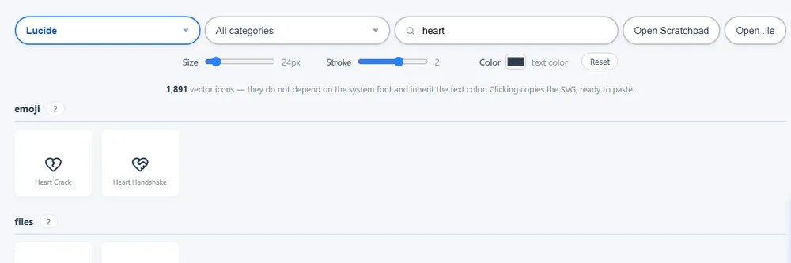
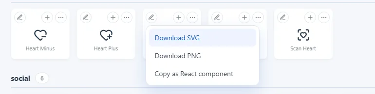
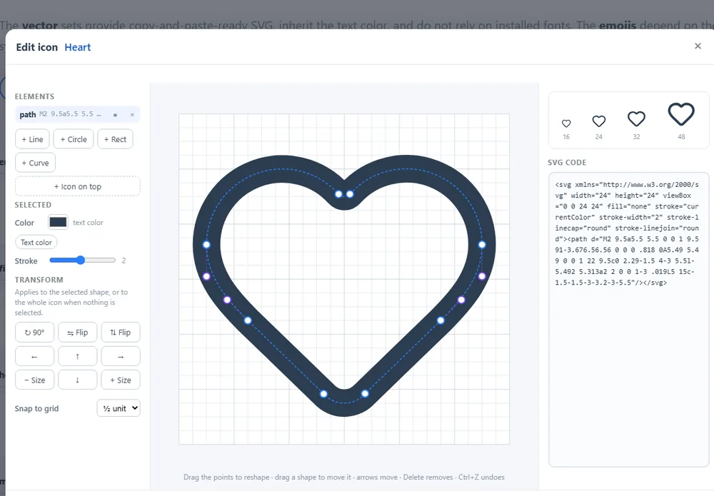
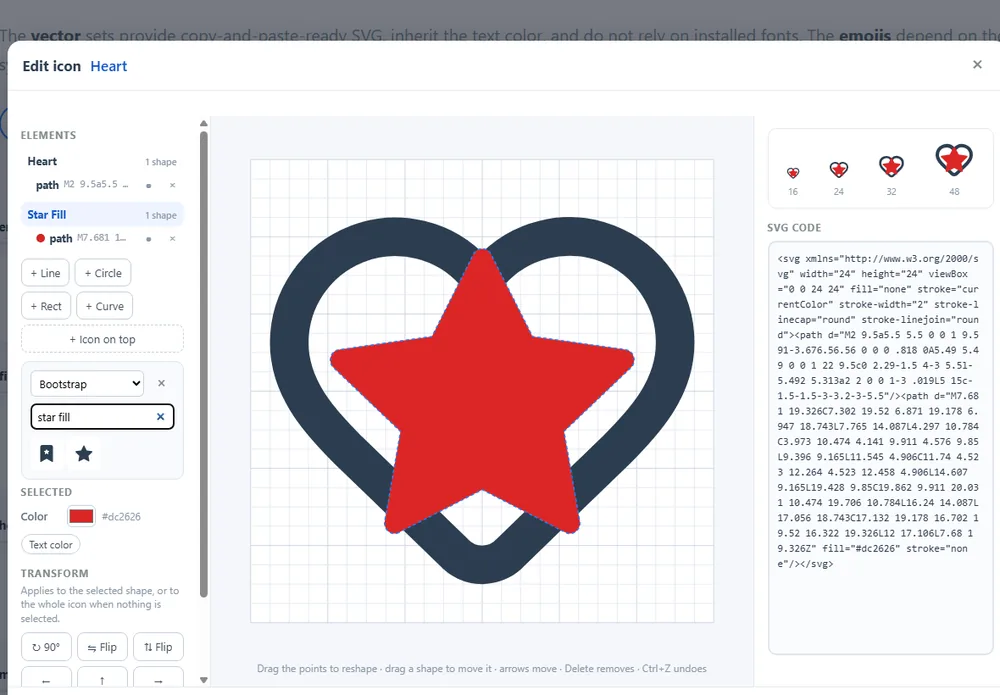
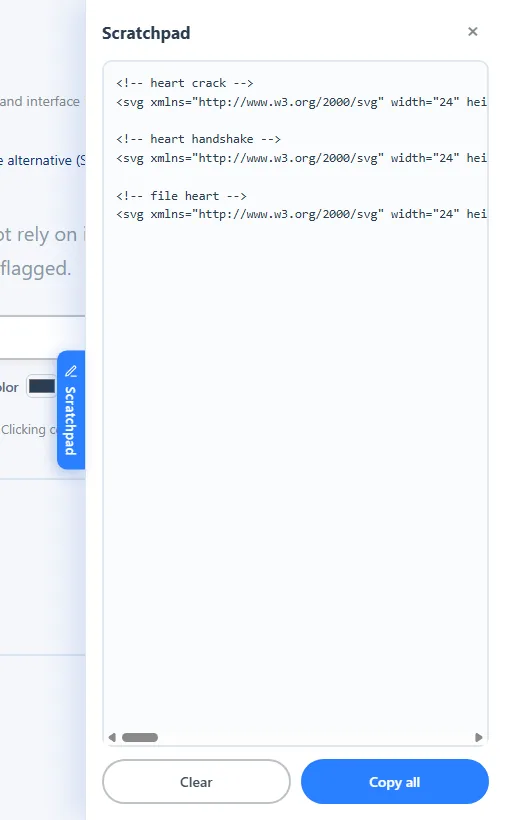

Guide
Tout ce que fait Icon Library, pas à pas. Utilisez le sommaire pour aller directement à un sujet.
Comment l’utiliser
- Choisissez un jeu avec le bouton Choisir. Rien n’est téléchargé avant, et chaque jeu reste en cache tant que la page est ouverte.
- Affinez avec Toutes les catégories (vous pouvez en cocher plusieurs) et le champ de recherche, qui porte sur le nom des icônes.
- Réglez le style avec les commandes Taille, Trait et Couleur. Elles s’appliquent à tout ce que vous copiez, téléchargez ou envoyez au scratchpad, et l’aperçu suit le trait et la couleur. Seuls Lucide et Feather ont un trait ; les emojis gardent leurs propres couleurs.
- Cliquez sur une icône pour copier son SVG (ou le caractère de l’emoji). Le clic droit copie l’alternative : le nom de l’icône pour les jeux vectoriels, ou l’emoji dans un SVG.
-
Utilisez les boutons de chaque carte :
- + ajoute l’icône au scratchpad ;
- ⋯ ouvre les téléchargements (SVG, PNG à la taille choisie) et Copier comme composant React ;
- le crayon (tous les jeux vectoriels) ouvre l’éditeur d’icônes.


L’éditeur d’icônes
Le crayon d’une carte ouvre l’icône sur une grille, prête à être modifiée. L’icône arrive avec la taille, le trait et la couleur que vous avez choisis.

- Changer la forme : sélectionnez une forme dans la liste ou sur la grille et faites glisser ses points. Les courbes montrent leurs points de contrôle, reliés par des pointillés ; déplacer un point de la courbe entraîne ses contrôles.
- Déplacer : faites glisser une forme, ou utilisez les flèches du clavier ou les boutons. Les points s’alignent sur la grille (1, ½ ou ¼ d’unité, ou libre).
- Transformer : pivoter de 90° ou 45°, retourner, agrandir ou réduire — la forme sélectionnée, ou toute l’icône si rien n’est sélectionné.
- Ajouter et retirer : nouvelles lignes, cercles, rectangles et courbes ; masquez une forme pour voir l’icône sans elle, ou supprimez-la.
- Combiner des icônes : Icône par-dessus cherche dans Lucide, Feather et Bootstrap et pose une autre icône sur l’actuelle, ajustée à la même grille et avec son propre style — une étoile pleine de Bootstrap peut se placer dans un cœur au contour de Lucide. Chaque icône a un titre dans la liste qui la sélectionne entière, pour la déplacer, la pivoter ou la redimensionner.
- Couleurs : donnez à chaque forme, ou à chaque icône, sa propre couleur et son épaisseur de trait dans le panneau Sélection. Couleur du texte revient à la couleur du texte environnant ; les formes avec leur propre couleur la gardent partout où l’icône est collée.
-
Enregistrer et reprendre plus tard :
Enregistrer .ile télécharge le projet dans un fichier
.ile— un petit fichier texte qui garde ce que le SVG seul perd : l’icône d’origine de chaque forme, les formes masquées et le nom. Rouvrez-le avec Ouvrir .ile, dans l’éditeur ou à côté de la recherche sur la page principale, ou déposez le fichier sur l’éditeur. Ouvrir un fichier en cours d’édition peut être annulé. - Code : le code SVG à côté de la grille suit chaque modification, et vous pouvez aussi y écrire. Les aperçus montrent le résultat en 16, 24, 32 et 48 pixels.
- Annuler et Rétablir (Ctrl+Z, Ctrl+Y), puis copiez, téléchargez ou envoyez l’icône modifiée au scratchpad. Les icônes Lucide et Feather peuvent aussi être ouvertes dans Lucide Studio, un éditeur en ligne indépendant aux outils plus avancés.

Le scratchpad
L’onglet Scratchpad sur le bord droit ouvre un tiroir où vous rassemblez des icônes en naviguant. Chaque icône est ajoutée sous forme de commentaire HTML avec son nom, suivi de son SVG : le résultat est prêt à coller dans un projet. Vous pouvez aussi écrire librement. Tout copier copie le contenu et Effacer le vide. Le texte est conservé dans votre navigateur et vous le retrouvez la fois suivante.

Pour les assistants d’IA
Les assistants d’IA peuvent créer une icône et vous la donner sous forme de
lien qui l’ouvre ici, dans l’éditeur, prête à ajuster. L’icône voyage dans
le lien lui-même, après le # : elle n’est donc jamais envoyée à
notre serveur. Dans l’éditeur, Partager le lien crée le même type
de lien pour votre propre projet. Instructions pour les IA :
llms.txt.
Partager une recherche
La barre d’adresse suit ce que vous regardez — par exemple
?set=lucide&q=arrow. Copiez l’adresse pour partager une
recherche ou l’ajouter à vos favoris.
Raccourcis clavier
| Touches | Action |
|---|---|
| Clic | Copie l’icône (SVG ou emoji) |
| Clic droit | Copie l’alternative (le nom, ou l’emoji en SVG) |
| Esc | Ferme les panneaux, les menus, le scratchpad et l’éditeur |
| ↑ ↓ | Parcourt les jeux dans la liste des jeux |
| ← → ↑ ↓ | Éditeur : déplace la forme, l’icône ou tout le dessin |
| Delete / Backspace | Éditeur : supprime le point sélectionné (après un clic sur un point) ou, sinon, la forme ou l’icône sélectionnée |
| Ctrl+Z | Éditeur : annuler |
| Ctrl+Y / Ctrl+Shift+Z | Éditeur : rétablir |
| Ctrl+C / Ctrl+V | Éditeur : copier et coller la forme ou l’icône sélectionnée |
Thème, langue et préférences
La page suit le thème clair ou sombre de votre système ; le bouton de l’en-tête le change. La langue est détectée d’après votre navigateur et peut être changée dans le sélecteur voisin. Ces deux choix, la taille, le trait et la couleur choisis et le texte du scratchpad sont conservés dans votre navigateur et vous les retrouvez la fois suivante.
Offrez-moi un café
Icon Library est gratuit. S’il vous est utile, le bouton Offrez-moi un café (environ 3 $ US, payés en toute sécurité via Stripe) aide à payer le serveur, le domaine et les outils qui le font tourner. Pour vous remercier, le site ne vous montre aucune publicité pendant 30 jours après le paiement.
Après le paiement, vous recevez un code de soutien. Pour retirer aussi la publicité sur un autre appareil — jusqu’à 3 —, ouvrez-y le même bouton et saisissez le code. Le bouton n’apparaît que lorsque les paiements sont disponibles.
Publier dans Iconlibrary
Iconlibrary est le jeu d’icônes de la communauté : des icônes dessinées dans l’éditeur par des soutiens, relues et partagées avec tous. Il apparaît dans la liste des jeux comme les autres.
- Ouvrez une icône dans l’éditeur, dessinez-la ou ajustez-la.
- Cliquez sur Publier dans Iconlibrary, donnez-lui un nom, choisissez jusqu’à 3 catégories et, si vous le souhaitez, un crédit (votre nom ou site).
- Votre code de soutien est rempli automatiquement sur l’appareil où vous avez offert le café ; sur un autre appareil, saisissez-le.
- Confirmez que vous avez créé l’icône (ou avez le droit de la partager) et que vous la publiez sous licence MIT, puis envoyez-la. Elle apparaît dans Iconlibrary après relecture.
Seules les formes simples peuvent être publiées — lignes, cercles, ellipses, rectangles, polylignes, polygones et paths. Les logos de marques et les copies d’autres icônes ne sont pas acceptés.